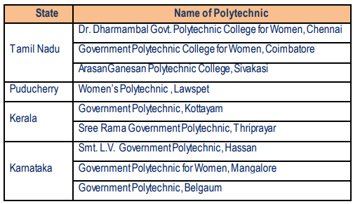

In accordance with the Persons with Disabilities Act – 1995 and the National Policy of Education (1986), the Ministry of Human Resource Development, Govt. of India has launched a Centrally Sponsored Scheme for upgrading selected polytechnics in the country to integrate Persons with Disabilities (PWDs) into the main stream of technical and vocational education. (Table 14).
Objectives of the Scheme
- Promote education and training of PWDs in the main stream of technical and vocational education and skill development programmes through formal and non-formal Programme.
- Identify PWDs in the suitable geographic catchments of the polytechnics.
- Identify suitable education and training programmes for PWDs with special emphasis on formal skill development programmes for illiterate youth with disabilities, for promoting wage or selfemployment as far as possible at their place or residence.
- Design need and competence based curricula for PWDs
- Preparing/ procuring/ developing suitable resources, including physical, human and informational for effective implementation of the programme.
- Develop norms and standards for different phases of the scheme, wherever needed.
- Network and collaborate with resource institutions and other organizations and take their assistance for manpower training, guidance and effective implementation of the scheme.
- Sensitize administrators, planners, faculty, staff and students and community at large about the problems and capabilities of the students with disabilities and to create suitable environment in the polytechnics.
- Develop innovative educational technologies and approaches for education, training and rehabilitation of youth with disabilities.
- Strengthen the existing placement cells of polytechnics to help for providing guidance and counseling and placement of youth with disabilities for wage and self-employment opportunities.
- Evolve suitable methods and practices for monitoring the scheme.
List of Polytechnics in the southern region implementing the PWD Scheme
The institute would like to place on record its deep sense of appreciation and gratitude to: I. The Government of India, Ministry of Human Resource Development (Department of Higher Education) for its continued support to all its programmes and activities The Government of India, Ministry of External Affairs for supporting our Overseas Training Courses (OTC); and ITEC programmes. The Board of Governors and its sub-committees for their contribution to the Governance of the Institute. The State Governments of Andhra Pradesh, Telangana, Karnataka, Kerala and Tamil Nadu and Union Territory of Puducherry for their continued cooperation by deputing teachers for various programmes and activities of the institute. Industries and their managements for their cooperation and assistance in conducting various programmes effectively. The faculty and staff members of the institute for their hard work and dedication in making the reporting year an eventful one. The Press, All India Radio, Doordarshan for publicity and support for the institute's programmes and activities.